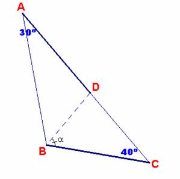

Problema 92
En un triángulo ABC se traza la ceviana BD (D en AC) de tal forma que AD=BC.
Si < A =30º y < C= 40º, hallar < DBC
Salazar, J. C. (Comunicación personal, Abril de 2003)

Sol:
Sea en lo que sigue:
x = AD= BC y a =<DBC
Como quiera que BD es lado común a los triángulos ABD y BCD, podemos expresarlo de dos formas distintas.
Por un lado tenemos que y, por otro que .
En definitiva, se habrá de verificar la siguiente igualdad:
sen40.sen(110-a) = sen30. sen(140-a)
Sigamos las siguientes reducciones trigonométricas:
2.sen40.cos(a-20) = sen(140-a)
sen(20+a) + sen(60-a)= sen (40+a)
sen(20+a) - sen (40+a)= sen(a-60)
-2.sen(-10).cos(30+a) - sen(a-60) = 0.
Por fin, resulta que:
2.sen10.sen (60-a) + sen(60-a) = 0
(2.sen10 +1).sen(60-a) = 0
Como quiera que el primer factor es no nulo, deducimos que entonces deberá serlo el segundo. Así tenemos que:
sen(60-a) = 0 ; a=60
El ángulo < DBC = 60º
Damián Aranda Ballesteros, profesor de Matemáticas del IES Blas Infante de Córdoba